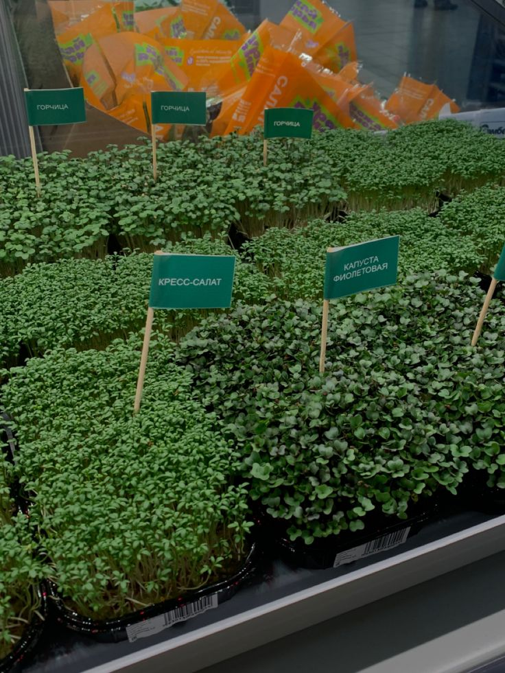

 На рынке существует множество различных видов микрозелени. Самыми популярными семенами для выращивания в домашних условиях стали салат, капуста, шпинат, редис, свекла, кресс-салат, пряные травы, зеленные, мангольд, капуста, горчица.
Выращивать микрозелень лучше всего на подоконниках и балконах на солнечной стороне, хотя и на северных окнах она приживается. Если использовать фитолампу, микрозелень будет расти быстрее. Не забывайте опрыскивать микрозелень из пульверизатора два-три раза в день.
Оптимальная температура в комнате — 18–24 градуса. Лучше не ставить микрозелень рядом с обогревателями, которые сушат воздух, и на продуваемых сквозняком местах. В магазинах продаются мини-фермы и лотки специально для выращивания микрозелени, но покупать их необязательно. Подойдут любые пластиковые формы с бортиками, упаковки из-под фруктов и овощей, одноразовая посуда, стеклянные банки.